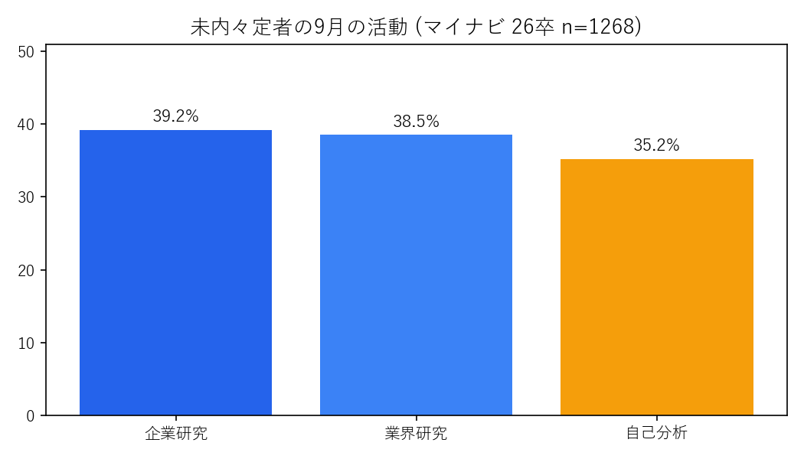
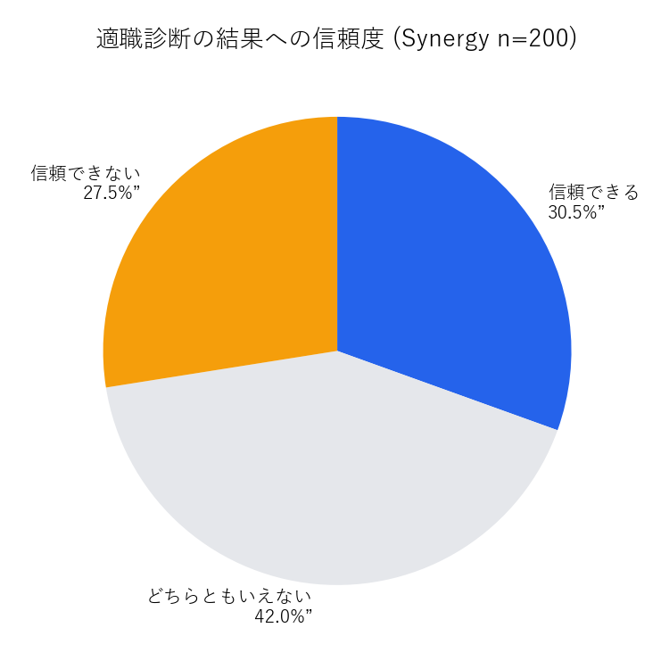
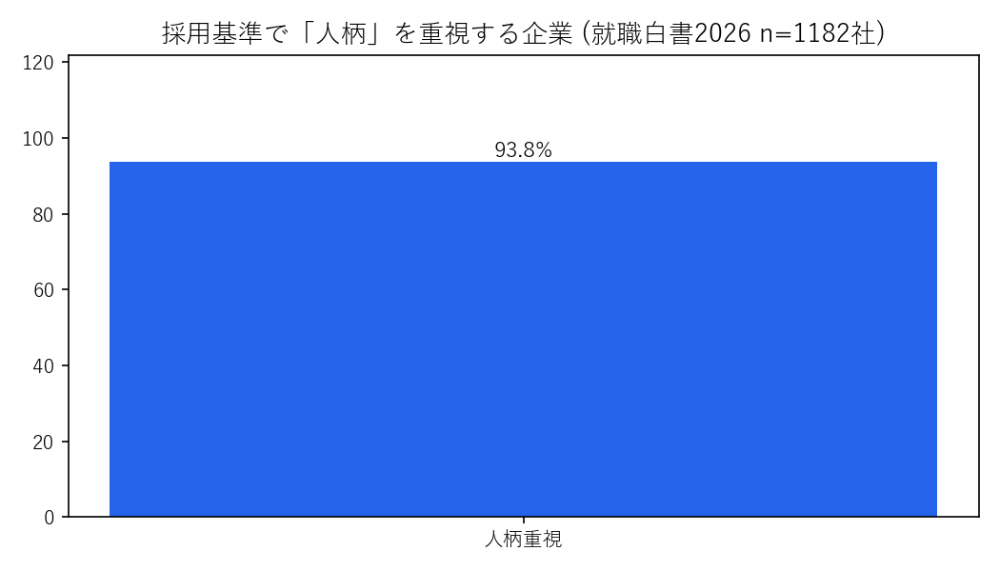

特別演習II — 問題定義プレゼンテーション 次回授業用 ● 発表準備中
なんとなく就活を、
なくそう。
本来は全員が十分な自己理解を持って就活に挑むべきにもかかわらず、やり方とゴールが分からないために、6割が苦戦したまま選考に進んでしまう — それが今回定義する問題です。
Trusted by data from
学情 n=275マイナビ n=1268dodaキャンパス n=317就職白書2026 企業1182社Synergy n=200
(01) 理想と現状 — The gap
あるべき姿と、いまの姿。
理想：客観的データと正しい手法に基づく自己理解を持って挑む。現状：手順もゴールも不明なまま10〜12月の本格化期に突入する。
60.7%就活で大変だったこと1位が自己分析
学情 26卒 n=275
学情 26卒 n=275
35.2%9月の未内々定者が自己分析に逆戻り
マイナビ 26卒 n=1268
マイナビ 26卒 n=1268
93.8%採用基準で「人柄」を重視する企業
就職白書2026 n=1182社
就職白書2026 n=1182社
40%入社後にギャップを感じた社会人
doda 社会人 n=124
doda 社会人 n=124
(02) データで見る現状 — Services
数字が語る、4つの事実。
01 / 学情
大変さ1位も、頑張って良かった1位も自己分析
60.7% / 46.5%
大変：自己分析60.7 / 面接57.1 / ES45.8。自由記述「不十分で強みと企業を掛け合わせられなかった」。 PDF原文 →
02 / マイナビ × doda
秋になっても土台作りに戻る
35.2% / 42.6%
未内々定者の9月活動：企業研究39.2 / 業界38.5 / 自己分析35.2。ESで最も重要だったことは自己分析42.6%。 マイナビ → doda →
03 / Synergy 適職診断
試すけど、納得できない
53.0% → 30.5%
経験53.0%、一致58.3%、でも信頼できる30.5%・どちらともいえない42.0%。「職種と結びつかない」が不信理由。 PR TIMES →
04 / 就職白書 × 社会人
企業は人柄を見ている
93.8% / 40%
学生アピール：バイト46.1 / 人柄40.9。AI利用者の57.1%が自己分析で使用。社会人40%が入社後ギャップ。 白書PDF →
(03) グラフで見る証拠 — Selected work
スライドそのまま、貼れる図。

2025 / Gakujo
大変だったこと1位は自己分析 60.7%

2025 / Mynavi
9月も35.2%が自己分析に立ち戻る

2025 / Synergy
信頼できる30.5%・保留42.0%

2026 / Hakusho
人柄重視93.8%の企業
“自己分析が不十分だったため、面接やESで自分の強みと企業の強みを掛け合わせてアピールするのが難しかった” — 26卒の声（学情調査より）
(04) 問題定義 — Process
だから、問題はこれだ。
本来は全員が十分な自己理解で挑むべきにもかかわらず、
やり方とゴールが分からないために、6割が苦戦したまま選考に進んでしまうことが問題である。
やり方とゴールが分からないために、6割が苦戦したまま選考に進んでしまうことが問題である。
01 / Discover 理想
十分な自己理解で挑む
強みを経験と語れる・軸がある・人柄を言語化できる。
02 / Design 現状
手順もゴールも不明
60.7%が大変・35%が秋に逆戻り・信頼できる30.5%のみ。
03 / Build ギャップ
自信なきまま選考へ
ES重要度42.6%なのに土台ゼロでスタートする往復構造。
04 / Evolve 意義
放置は三者損失
学生の納得低下・企業の人柄評価不能・社会のミスマッチ40%。
(05) データ集 — All numbers
全数値と出典リンク。
| 項目 | 数値 | ソース |
|---|---|---|
| 大変だったこと1位 自己分析 | 60.7%（面接57.1/ES45.8） | 学情 26卒 n=275 PDF |
| 頑張って良かった1位 自己分析 | 46.5% | 同上 |
| ESで最も重要 自己分析 / 自己PRは自己分析基に | 42.6% / 41% | doda n=317 |
| 開始3年4-6月 / 手法ツール・自分史 | 35% / 30%・21% | doda n=239 |
| 9月未内々定者 自己分析 | 35.2%（企業研究39.2） | マイナビ n=1268 |
| 適職診断経験 / 一致 / 信頼 / 保留 | 53.0 / 58.3 / 30.5 / 42.0% | Synergy n=200 |
| 企業 人柄重視 / 学生人柄アピール / AI自己分析利用 | 93.8 / 40.9 / 57.1% | 白書PDF 解説 |
| 入社後ギャップあり | 40% | doda 社会人n=124 |
3年10-12月限定の一次統計は非公開のため、マイナビ9月値＋開始時期35%で代替。引用時はn数・期間を併記すること。